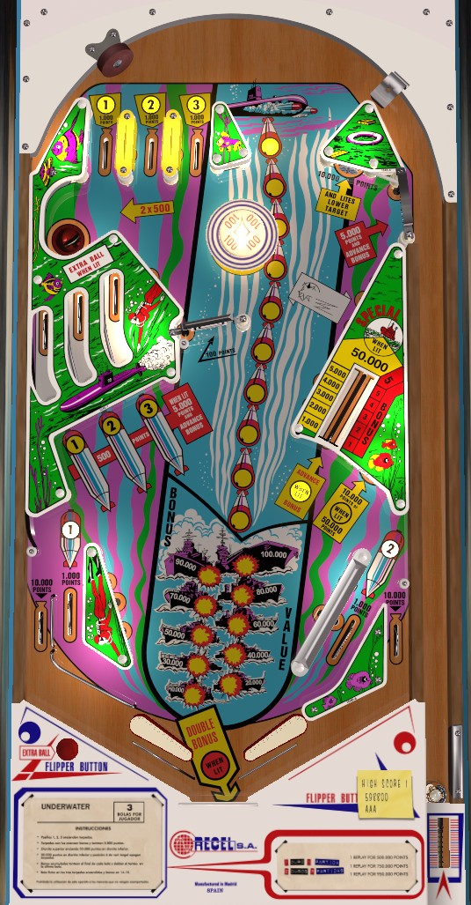

Underwater is the 4-player version. Torpedo!! is the 1-player version with identical rules and scoring, and is not to be confused with Torpedo Alley (Data East, 1988).
End of ball bonus is always top priority on Underwater. Any 100-point switch, including slingshots, the pop bumper, the spinner, and the upper left saucer, moves the torpedo one position. Moving the torpedo 10 positions awards one bonus advance. You can also earn bonus advances by shooting captive balls on the left that correspond to earned 1-2-3 numbers from top or in lanes, or by shooting the vary-target. If the bonus is maxed at 150,000: hit the upper right standup target to light the lower right standup target for 50,000, or keep making full vary-target shots for 50,000s.
The below picture of Underwater's playfield was taken from the VPX recreation by JPSalas.

The numbers 1-2-3 can be collected at the top lanes on the plunge, and numbers 1 and 2 can also be collected on the in lanes. All of these lanes score 1,000 points. Make a lit lane to unlight it, and light the corresponding captive ball in the middle-left. A shot to an unlit captive ball scores 500 points, which is effectively 1/2 of a bonus advance. A shot to a lit captive ball scores 5,000 points and one full bonus advance.
The vary-target can be pushed back to any of 6 positions. These score 1,000, 2,000, 3,000, 4,000, 5,000, or 50,000 points. If the bonus torpedo is exactly one step away from advancing the bonus, a full shot to the vary-target will also score a Special. The vary-target can also be lit to advance the bonus, in which case the 6 positions it can be pushed to will give 1, 2, 3, 4, 5, or 5 full bonus advances. The Advance Bonus light at the vary-target may or may not be lit at the start of each ball.
The upper right standup target scores 10,000 points, lights the vary-target for Advance Bonus if it is not already lit, and lights the lower right standup target to score 50,000 points instead of 10,000. Collecting the 50,000 from the lower right standup causes that standup, the vary-target's Advance Bonus light, and all collected 1-2-3 numbers to reset. You'll need to recollect 1-2-3 from the top lanes or in lanes and relight the vary-target and lower right target by hitting the upper right target.
Scores 5,000 points and a bonus advance, and drops the ball into the shooter lane for a replunge. Usually cannot be shot directly, and is only accessible off of a pop bumper hit or a ricochet from other geometry.
The spinner always scores 100 points (1/10 of a bonus advance) per spin. Direct shots to the spinner can be deceptively dangerous, as if you miss and hit the post to the right of the spinner, an immediate center drain rebound is very likely. The pop bumper always scores 100 points.
Underwater has a conventional in/out lane setup; however, the right in lane is slanted toward the side of the playfield. Nudging skill off of the post just above the right out lane is required to keep a ball in play in this area. In lanes score 1,000 points and spot the number 1 (left) or 2 (right). Out lanes score 10,000 points.
Any 100-point switch moves the torpedo one position, equivalent to 1/10 of a bonus advance. 100 points can be earned from any slingshot, the pop bumper, and the spinner. The upper left saucer is cleverly labelled as 2x500 points; it gives 1,000 points total, but it does so in increments of 100, so 1 full bonus advance is scored. Unlit captive balls, which score 500 points, also count as advancing the torpedo 5 positions, accounting for 1/2 of a bonus advance. Full bonus advances can be earned from using the upper gate, hitting lit captive balls, or hitting the vary-target when it is lit for advance bonus. Each bonus advance is worth 10,000 points in base bonus. The maximum base bonus is 150,000 points. Double bonus is generally only award on the final ball of the game, but it seems to be possible to have double bonus lit for all of balls 3-4-5 in a 5-ball game as well. There is no skill-based way to light double bonus any other time. Extra ball is lit at the top saucer if the bonus value is at least 140,000 points; it appears to be adjustable whether having all of 1-2-3 collected is necessary as well. Bonus is the source of the majority of scoring on Underwater, so don't tilt unless you're trying to save a house ball. The first bonus advance is never given for free, so it is possible to drain with 0 bonus.